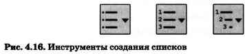

4.4.1. Списки
Ключевые слова:
- нумерованные списки
- маркированные списки
- многоуровневые списки
- таблица
- графические изображения
Известно, что текстовая информация воспринимается человеком лучше, если она визуализирована — организована в виде списков, таблиц, диаграмм, снабжена иллюстрациями (фотографиями, рисунками, схемами).
Современные текстовые процессоры предоставляют пользователям широкие возможности визуализации информации в создаваемых документах.
Всевозможные перечни в документах оформляются с помощью списков. При этом все пункты перечня рассматриваются как абзацы, оформленные по единому образцу.
По способу оформления различают нумерованные и маркированные списки.
Элементы (пункты) нумерованного списка обозначаются с помощью последовательных чисел, для записи которых могут использоваться арабские и римские цифры. Элементы списка могут быть пронумерованы и буквами — русскими или латинскими (рис. 4.14).
Нумерованный список принято использовать в тех случаях, когда имеет значение порядок следования пунктов. Особенно часто такие списки используют для описания последовательности действий.
Нумерованные списки вы регулярно создаёте, заполняя в дневнике расписание уроков на каждый учебный день.
При создании новых, удалении или перемещении существующих элементов нумерованного списка в текстовом процессоре вся нумерация списка меняется автоматически.
Элементы маркированного списка обозначаются с помощью значков-маркеров. Пользователь может выбрать в качестве маркера любой символ компьютерного алфавита и даже небольшое графическое изображение (рис. 4.15). С помощью маркированного списка оформлены ключевые слова в начале каждого параграфа вашего учебника.

Маркированный список используют в тех случаях, когда порядок следования элементов в нём не важен. Например, в виде маркированного списка можно оформить перечень предметов, изучаемых вами в 7 классе.
По структуре различают одноуровневые и многоуровневые списки.
Списки в рассмотренных выше примерах имеют одноуровневую структуру.
Список, элемент которого сам является списком, называется многоуровневым. Так, оглавление вашего учебника информатики является многоуровневым (трёхуровневым) списком.
Списки создаются в текстовом процессоре с помощью команды строки меню или кнопок панели форматирования (рис. 4.16).
4.4.2. Таблицы
Для описания ряда объектов, обладающих одинаковыми наборами свойств, наиболее часто используются таблицы, состоящие из столбцов (граф) и строк. Вам хорошо известно табличное представление расписания уроков, в табличной форме представляются расписания движения автобусов, самолётов, поездов и многое другое.
Представленная в таблице информация наглядна, компактна и легкообозрима.
Правильно оформленная таблица имеет структуру, показанную на рис. 4.17.
Необходимо соблюдать следующие правила оформления таблиц:
- Заголовок таблицы должен давать представление о содержащейся в ней информации.
- Заголовки столбцов и строк должны быть краткими, не содержать лишних слов и, по возможности, сокращений.
- В таблице должны быть указаны единицы измерения. Если они общие для всей таблицы, то указываются в заголовке таблицы (либо в скобках, либо через запятую после названия). Если единицы измерения различаются, то они указываются в заголовке соответствующей строки или столбца.
- Желательно, чтобы все ячейки таблицы были заполнены. При необходимости в них заносят следующие условные обозначения:
? — данные неизвестны;
х — данные невозможны;
? — данные должны быть взяты из вышележащей ячейки.
В ячейках таблиц могут быть размещены тексты, числа, изображения. Пример такой таблицы показан на рис. 4.18.
Создать таблицу можно с помощью соответствующего пункта меню или кнопки на панели инструментов, указав необходимое число столбцов и строк; в некоторых текстовых процессорах таблицу можно «нарисовать».
Созданную таблицу можно редактировать, изменяя ширину столбцов и высоту строк, добавляя и удаляя столбцы и строки, объединяя и разбивая ячейки. Вводить информацию в ячейки можно так: с помощью клавиатуры; копировать и вставлять заранее подготовленные фрагменты. В текстовых процессорах есть возможность автоматически преобразовать имеющийся текст в таблицу.
Внешний вид таблицы можно оформить самостоятельно, подобрав тип, ширину и цвет границ ячеек, цвет фона ячеек, отформатировав содержимое ячеек. Кроме того, отформатировать таблицу можно автоматически.
4.4.3. Графические изображения
Современные текстовые процессоры позволяют включать в документы различные графические изображения, созданные пользователем в других программах или найденные им в сети Интернет. Готовые графические изображения можно редактировать, изменяя их размеры, основные цвета, яркость и контрастность, поворачивая, накладывая друг на друга и т. д.
Во многих текстовых процессорах имеется возможность непосредственного создания графических изображений из наборов автофигур (графических примитивов). Также есть возможность создания красочных надписей с использованием встроенных текстовых эффектов.
Визуализировать числовую информацию, содержащуюся в таблице, можно с помощью диаграмм, средства создания которых также включены в текстовые процессоры.
Наиболее мощные текстовые процессоры позволяют строить разные виды графических схем (рис. 4.19), обеспечивающих визуализацию текстовой информации.
САМОЕ ГЛАВНОЕ
Текстовая информация воспринимается человеком лучше, если она визуализирована — организована в виде списков, таблиц, диаграмм, снабжена иллюстрациями (фотографиями, рисунками, схемами).
Всевозможные перечни в документах оформляются с помощью списков. По способу оформления различают нумерованные и маркированные списки. Нумерованный список принято использовать в тех случаях, когда имеет значение порядок следования пунктов; маркированный — когда порядок следования пунктов в нём не важен. По структуре различают одноуровневые и многоуровневые списки.
Для описания ряда объектов, обладающих одинаковыми наборами свойств, наиболее часто используются таблицы, состоящие из столбцов и строк. Представленная в таблице информация наглядна, компактна и легкообозрима.
В современных текстовых процессорах предусмотрены возможности включения, обработки и создания графических объектов.